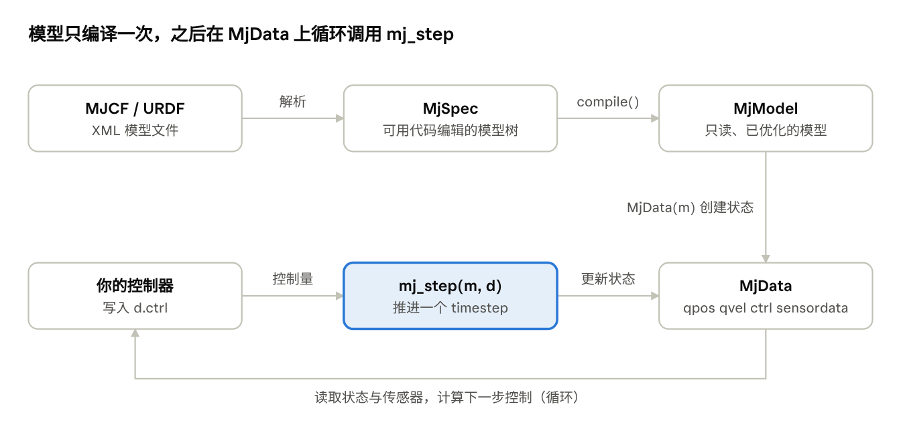

入门教程#
本教程基于 MuJoCo 4.0.1，更新于 2026-11-16。每个小节开头的“对应官方文档”方框可以直接跳到中文官方文档里讲同一主题的部分。
0. 前言#
本教程面向 MuJoCo 初学者，内容以 2026 年 11 月的最新版本 MuJoCo 4.0.1（2026-11-11 发布）为准。所有代码均为可直接运行的 Python 示例，资料来自官方文档、官方 GitHub 与 changelog，链接列在文末。
适用读者：会用 Python 和 NumPy，了解基础刚体力学（位姿、关节、力矩）即可。不需要 C/C++ 基础。
建议学习路线（约 1～2 周）：
第 1～3 章：理解 MuJoCo 是什么，装好环境，搞清
MjModel/MjData/mj_step三件套。第 4 章：手写 MJCF 模型，这是最核心的技能。
第 5～7 章：用 Python 跑仿真、看画面、加执行器和传感器做控制。
第 8～9 章：调接触和物理参数，学雅可比、逆动力学、程序化建模。
第 10 章：按需进入 GPU 并行仿真与强化学习（MJX、MuJoCo Warp、Playground）。
第 11～12 章：遇到问题时查阅的排错清单与速查表。
版本提醒：MuJoCo 更新很快（2026 年 10～11 月就发布了 3.16、3.17、4.0.0、4.0.1 四个版本）。网上很多老教程基于 mujoco-py 或 2.x 版本，其 API 已过时，请以本教程和随包附带的官方文档为准。4.0 起 pip 包内自带完整 Sphinx 手册（位于 mujoco/doc/ 目录），可直接查阅。
1. MuJoCo 简介#
MuJoCo（Multi-Joint dynamics with Contact）是一个面向机器人、生物力学、强化学习的物理引擎，特点是在广义坐标下精确、快速地模拟带接触的多关节系统。它由 Emo Todorov 于 2012 年前后开发，2021 年被 Google DeepMind 收购并免费开放，2022 年起以 Apache 2.0 协议开源，目前仍由 DeepMind 主导维护。
为什么选 MuJoCo：
速度快、数值稳定，适合大量采样的强化学习与优化控制。
采用广义坐标 + 软约束的凸优化接触模型，关节约束不会被违反，逆动力学有唯一解。
模型用 XML（MJCF）描述，可读性强；也能直接加载 URDF。
官方 Python 绑定完善，另有 GPU 并行版本（MJX、MuJoCo Warp）。
生态组件一览：
组件 |
pip 包名 |
用途 |
|---|---|---|
MuJoCo 本体 |
|
CPU 物理引擎 + Python 绑定 + 查看器。从 4.0 起是一个元包，包含 |
MuJoCo Studio |
|
新一代交互式查看器，支持桌面与网页两种模式，基于 Filament 渲染 |
MJX |
|
基于 JAX 的实现，可在 GPU/TPU 上并行且可微分 |
MuJoCo Warp（MJWarp） |
|
NVIDIA 与 DeepMind 联合开发的 GPU 实现，面向高吞吐批量仿真，3.5.0 起正式发布 |
MuJoCo Playground |
|
开箱即用的机器人 RL 环境套件（1.0 版可选 MuJoCo 或 MuJoCo Warp 作物理后端） |
MuJoCo Menagerie |
无（Git 仓库） |
高质量机器人模型库，含机械臂、四足、人形、灵巧手等 |
近期重要版本（按时间倒序）：
版本 |
日期 |
要点 |
|---|---|---|
4.0.1 |
2026-11-11 |
Bug 修复；Windows 上可用 Studio 网页查看器 |
4.0.0 |
2026-11-06 |
Python 包拆分为 core / studio；去掉 Python 3.10；新增 speculative 防穿透接触、弹塑性；移除 |
3.17.0 |
2026-10-22 |
新增 |
3.16.0 |
2026-10-14 |
frame 缩放、程序化网格、mjSpec 新操作 |
3.5.0 |
2026 年初 |
MuJoCo Warp 正式发布 |
注意：旧的
mujoco-py（OpenAI 时代的绑定）已停止维护，请勿使用。如果看到import mujoco_py的代码，说明是老教程。
2. 安装与环境配置#
对应官方文档
MuJoCo 的 Python 包已内置引擎动态库，一条 pip install mujoco 即可，无需单独下载二进制或配置许可证。
2.1 环境要求#
Python 3.11 及以上（4.0.0 起去掉了 3.10 支持）。
Windows / Linux / macOS 均有预编译 wheel。
只做 CPU 仿真不需要显卡；MJX / MuJoCo Warp 训练建议 NVIDIA GPU。
2.2 联网安装#
# 建议先建虚拟环境
python -m venv mj-env
# Windows: mj-env\Scripts\activate Linux/macOS: source mj-env/bin/activate
pip install mujoco # 完整版：引擎 + Studio 查看器 + OpenGL
pip install mujoco-core # 精简版：只依赖 numpy，适合无屏服务器 / RL 训练机
4.0 起 mujoco 是一个元包，实际会安装 mujoco-core、mujoco-studio、glfw、pyopengl。两种安装方式下均用 import mujoco 导入。
常用附加包（按需安装）：
pip install mediapy imageio # 保存图片 / 视频
pip install mujoco-mjx # JAX 版（GPU 并行、可微分）
pip install mujoco-warp # NVIDIA GPU 高吞吐版
pip install mujoco-menagerie # 一键获取 Menagerie 机器人模型（首次使用会联网下载）
2.3 离线安装#
在一台能上网、且操作系统和 Python 版本与目标机器一致的电脑上打包依赖：
# 在能上网的机器上
mkdir wheels
pip download mujoco mediapy imageio -d wheels
# 如果两台机器平台不同，显式指定目标平台，例如 Windows x64 + Python 3.12：
pip download mujoco -d wheels --platform win_amd64 --python-version 3.12 --only-binary=:all:
把 wheels 文件夹拷到目标机器后：
pip install --no-index --find-links=wheels mujoco mediapy imageio
另外建议一并下载：mujoco 官方 GitHub 仓库的 model/ 目录（含 humanoid、car 等示例模型）、mujoco_menagerie 仓库（约数百 MB）、官方 Colab 教程 notebook。离线文档已随包位于 site-packages/mujoco/doc/。
2.4 验证安装#
import mujoco
print(mujoco.__version__) # 应输出 4.0.1 或更高
m = mujoco.MjModel.from_xml_string("<mujoco><worldbody><geom size='0.1'/></worldbody></mujoco>")
d = mujoco.MjData(m)
mujoco.mj_step(m, d)
print("OK, time =", d.time)
再试一下图形界面（需要显示器）：
python -m mujoco.viewer # 打开空查看器，可把 XML 文件拖进窗口
2.5 常见安装问题#
现象 |
原因与处理 |
|---|---|
从 3.x 升级到 4.x 后 import 报错或版本混乱 |
4.0 拆包导致。先 |
在 Python 3.10 上只能装到 3.x |
4.0 不再支持 3.10，升级 Python 或固定使用 3.x 版本 |
Linux 服务器上渲染报 OpenGL 错误 |
无显示器时设置环境变量 |
macOS 上 |
macOS 需用 |
离线安装时 pip 报找不到 numpy/glfw |
离线打包时漏了依赖，用 |
3. 核心概念#
MuJoCo 的一切都围绕三样东西：描述模型的 MjModel、保存状态的 MjData、推进时间的 mj_step。理解它们的分工，就理解了 MuJoCo 的 API 风格。
3.1 从文件到仿真#
模型文件（MJCF / URDF）→ MjSpec（内存中可编辑的高层描述）→ 编译器 → MjModel（高度优化的只读模型）→ 配合 MjData 反复调用 mj_step。

上半部分只在建模时运行一次；下半部分的循环就是每个仿真脚本的主体。
对象 |
内容 |
是否随时间变化 |
|---|---|---|
|
与 MJCF 一一对应的树状结构，可用代码增删元素 |
否（编辑后需重新编译） |
|
质量、惯量、几何、关节、执行器参数，以及 |
否（ |
|
状态 |
是 |
MuJoCo 是数据导向而非面向对象的：少数几个结构体，加上大量接受 (model, data) 的函数。多线程时可共享一个 MjModel，每个线程各自持有一个 MjData。
3.2 广义坐标：nq 与 nv#
对应官方文档
MuJoCo 使用广义（关节）坐标，每个刚体的世界位姿是通过正向运动学算出来的，不能直接写 xpos 来移动物体，而要改 qpos。
关节类型 |
qpos 维度 |
qvel 维度 |
说明 |
|---|---|---|---|
|
1 |
1 |
绕轴转动，单位弧度 |
|
1 |
1 |
沿轴平移 |
|
4 |
3 |
四元数姿态 + 角速度 |
|
7 |
6 |
位置(3) + 四元数(4)；线速度(3) + 局部系角速度(3) |
因此 model.nq（位置维度）可能大于 model.nv（自由度数）。四元数顺序是 [w, x, y, z]，与 SciPy 的 [x, y, z, w] 不同，是新手最常踩的坑。
3.3 MjData 常用字段#
字段 |
形状 |
含义 |
|---|---|---|
|
标量 |
仿真时间（秒） |
|
nq / nv / nv |
广义位置、速度、加速度 |
|
nu |
执行器控制输入（你每步要写的东西） |
|
na |
执行器内部激活状态 |
|
nbody×3 / ×4 / ×9 |
各 body 在世界系下的位置、姿态 |
|
ngeom×3 / nsite×3 |
geom、site 的世界位置 |
|
nsensordata |
所有传感器读数拼成的一维数组 |
|
标量 / 数组 |
当前接触数量与接触详情 |
|
nv |
用户施加的广义力 |
|
nbody×6 |
用户施加在 body 上的笛卡尔力/力矩 |
|
nmocap×3 / ×4 |
mocap body 的位姿（可直接设置） |
3.4 单位与坐标系#
对应官方文档
MuJoCo 不强制单位，但默认值按国际单位制（米、千克、秒）设定：重力
0 0 -9.81，geom 默认密度 1000（水）。建议始终使用国际单位。Z 轴朝上。
MJCF 中的角度默认是度（可用
<compiler angle="radian"/>修改），而MjModel/MjData中的角度一律是弧度。所有 ID 从 0 开始，世界 body 的 ID 是 0。
mj_name2id找不到名字时返回 -1。
3.5 一步仿真里发生了什么#
对应官方文档
mj_step 内部依次完成：
位置相关：正向运动学（算出
xpos等）、碰撞检测（生成contact）、组合刚体算法求质量矩阵 M 并分解。速度相关：递归牛顿-欧拉求偏置力 c（科氏力、离心力、重力）。
力：汇总被动力（弹簧、阻尼）、执行器力、用户外力，得到 τ。
约束求解：解一个凸优化问题得到接触力、关节限位力等约束力 f。
加速度：qacc = M⁻¹(τ + Jᵀf − c)。
积分：按
timestep推进 qpos、qvel、act。
只想“算一遍但不推进时间”（例如修改 qpos 后刷新 xpos、传感器），用 mj_forward；只要运动学可用更轻的 mj_kinematics。
4. MJCF 建模详解#
MJCF 是 MuJoCo 的 XML 模型格式，用嵌套的 <body> 表达运动学树，用 <joint> 给 body 增加自由度，用 <geom> 提供碰撞与外观。写好 MJCF 是学 MuJoCo 最核心的技能。
4.1 文件顶层结构#
对应官方文档
<mujoco model="name">
<compiler .../> <!-- 编译选项：角度单位、网格目录等 -->
<option .../> <!-- 仿真选项：时间步、积分器、重力等 -->
<default> ... </default> <!-- 默认属性类 -->
<asset> ... </asset> <!-- 网格、纹理、材质、高度场 -->
<worldbody> ... </worldbody> <!-- 运动学树（必须） -->
<contact> ... </contact> <!-- 碰撞对的显式包含/排除 -->
<equality> ... </equality> <!-- 等式约束：焊接、连接、关节耦合 -->
<tendon> ... </tendon> <!-- 肌腱/绳索 -->
<actuator> ... </actuator> <!-- 执行器 -->
<sensor> ... </sensor> <!-- 传感器 -->
<keyframe> ... </keyframe> <!-- 初始状态快照 -->
</mujoco>
4.2 主要元素#
对应官方文档
元素 |
作用 |
常用属性 |
|---|---|---|
|
刚体，只有质量和惯量，没有形状；子 body 相对父 body 定位 |
|
|
给所在 body 相对父 body 增加自由度；无 joint 的 body 与父 body 固连 |
|
|
简写的自由关节，只能用于顶层 body |
|
|
碰撞体 + 外观，并按密度自动算出 body 的质量和惯量 |
|
|
无碰撞、无质量的参考点，用来挂传感器、绕肌腱、做末端参考 |
|
|
显式指定质量、质心、惯量，从 URDF 转来的模型常用 |
|
|
相机、灯光，可固定在世界或跟随 body |
|
geom 类型与 size 含义（size 一律是半长/半径）：
type |
size |
备注 |
|---|---|---|
|
半宽 x、半宽 y、网格间距 |
无限大平面（只用于显示时有尺寸），只能放在静态 body |
|
半径 |
默认类型 |
|
半径、半长 |
用 |
|
半径、半长 |
可用 |
|
x/y/z 三个半长 |
|
|
三个半轴 |
|
|
由网格决定 |
碰撞时自动取凸包 |
|
由高度场决定 |
地形 |
|
由插件决定 |
有符号距离场，可表达非凸形状 |
4.3 姿态的写法#
对应官方文档
任选其一：quat="w x y z"、euler="rx ry rz"（顺序由 compiler/eulerseq 决定，默认 xyz）、axisangle="ax ay az angle"、xyaxes="x轴(3) y轴(3)"、zaxis="z轴(3)"。注意角度单位受 compiler/angle 控制，默认是度。
4.4 默认类（default）#
对应官方文档
<default> 用来批量设定属性，类可以嵌套继承：
顶层
<default>对所有元素生效；嵌套的<default class="xxx">继承父类并覆盖部分属性。元素用
class="xxx"选用某类；body 的childclass="xxx"让其内部所有元素默认使用该类。元素上显式写的属性优先级最高。
常见用法是定义 visual 和 collision 两个类：视觉类设 contype="0" conaffinity="0" group="2"，碰撞类设 group="3"，这也是 Menagerie 模型的通用写法。
4.5 compiler 与 option 常用设置#
对应官方文档
属性 |
默认值 |
说明 |
|---|---|---|
|
|
MJCF 中角度的单位，可改 |
|
|
写了 |
|
模型所在目录 |
网格文件目录 |
|
|
时间步（秒），即 500 Hz |
|
|
推荐改为 |
|
|
约束求解器，另有 |
|
|
求解器最大迭代次数 |
|
|
摩擦锥类型，另有 |
|
|
重力 |
4.6 完整示例：双摆 + 自由方块#
将下面内容保存为 demo.xml，后续章节的代码都会用它。用 python -m mujoco.viewer --mjcf=demo.xml 即可查看。
<mujoco model="demo">
<compiler angle="degree" autolimits="true"/>
<option timestep="0.002" integrator="implicitfast"/>
<default>
<joint damping="0.05"/>
<default class="link">
<geom type="capsule" size="0.03" rgba="0.8 0.6 0.4 1"/>
</default>
</default>
<asset>
<texture name="grid" type="2d" builtin="checker" rgb1=".1 .2 .3" rgb2=".2 .3 .4" width="300" height="300"/>
<material name="grid" texture="grid" texrepeat="8 8" reflectance=".2"/>
</asset>
<worldbody>
<light pos="0 0 3" dir="0 0 -1"/>
<geom name="floor" type="plane" size="2 2 0.1" material="grid"/>
<camera name="side" pos="0 -2.5 0.8" xyaxes="1 0 0 0 0.3 1"/>
<!-- 双摆：第一节挂在 1 米高处 -->
<body name="link1" pos="0 0 1">
<joint name="hinge1" axis="0 1 0" range="-120 120"/>
<geom class="link" fromto="0 0 0 0 0 -0.4"/>
<body name="link2" pos="0 0 -0.4">
<joint name="hinge2" axis="0 1 0"/>
<geom class="link" fromto="0 0 0 0 0 -0.4"/>
<site name="tip" pos="0 0 -0.4" size="0.02"/>
</body>
</body>
<!-- 自由落体的方块 -->
<body name="box" pos="0.5 0 0.3">
<freejoint name="box_free"/>
<geom name="box_geom" type="box" size="0.05 0.05 0.05" rgba="0.2 0.6 0.9 1"/>
</body>
</worldbody>
<actuator>
<motor name="m1" joint="hinge1" gear="1" ctrlrange="-5 5"/>
<position name="p2" joint="hinge2" kp="20" ctrlrange="-1.57 1.57"/>
</actuator>
<sensor>
<jointpos name="q1" joint="hinge1"/>
<framepos name="tip_pos" objtype="site" objname="tip"/>
</sensor>
<keyframe>
<!-- qpos = hinge1, hinge2, 方块位置(3), 方块四元数(4)，共 9 维 -->
<key name="home" qpos="0.5 0 0.5 0 0.3 1 0 0 0"/>
</keyframe>
</mujoco>
要点解读：
这个模型 nq = 1 + 1 + 7 = 9，nv = 1 + 1 + 6 = 8，nu = 2。
fromto同时决定了胶囊的位置、方向和长度，是构建连杆最方便的写法。keyframe 中的 qpos 是弧度，不受
compiler/angle影响；position执行器的ctrlrange同样以弧度表示。父子 body 之间默认不检测碰撞，所以 link1 与 link2 的胶囊重叠也不会互相弹开。
4.7 模型复用与导入#
<include file="robot.xml"/>：把另一个文件原样嵌入（Menagerie 的scene.xml就是这样引用机器人的）。4.0 起重复 include 同一文件会报错。<frame>：只做坐标变换的虚拟层，可整体平移、旋转，3.16 起还能缩放内容。<replicate>：按数量和偏移复制一组元素。需要把一个模型“接到”另一个模型的某个 body 上（如把夹爪装到机械臂上），用 MjSpec 的 attach 功能（见第 9 章）。
4.0 起
composite元素已移除，绳索、布料、软体一律用flexcomp。
5. Python API 基础#
所有仿真脚本都是同一个骨架：加载模型 → 创建数据 → 循环里写 ctrl 并调用 mj_step → 读状态。本章代码均已在 MuJoCo 4.0.1 + Python 3.13 上实测通过。
5.1 加载模型#
对应官方文档
import mujoco
import numpy as np
m = mujoco.MjModel.from_xml_path("demo.xml") # 从文件（MJCF 或 URDF）
# m = mujoco.MjModel.from_xml_string(xml_str) # 从字符串
# m = mujoco.MjModel.from_binary_path("model.mjb") # 从二进制（与版本绑定，不建议长期保存）
d = mujoco.MjData(m)
print(m.nq, m.nv, m.nu) # 9 8 2
print(m.opt.timestep) # 0.002
带网格的模型如果从字符串加载，网格文件可通过 from_xml_string(xml, assets={"mesh.stl": bytes}) 传入。
5.2 最小仿真循环#
对应官方文档
mujoco.mj_resetDataKeyframe(m, d, m.key("home").id) # 从关键帧初始化
while d.time < 2.0:
# 1) 读状态、算控制
d.ctrl[0] = -2.0 * d.qpos[0] - 0.2 * d.qvel[0] # 给 motor 一个 PD 力矩
d.ctrl[1] = 0.5 # 给 position 执行器一个目标角（弧度）
# 2) 推进一步
mujoco.mj_step(m, d)
print(d.time, d.qpos.round(3), d.ncon)
mj_step 一次推进 m.opt.timestep 秒。若控制频率低于仿真频率（如 50 Hz 控制、500 Hz 仿真），可用 mujoco.mj_step(m, d, nstep=10) 一次步进多步。
5.3 按名字访问（推荐）#
对应官方文档
比起硬编码下标，用名字更安全。访问器把 MjModel/MjData 中对应字段去掉类别前缀后暴露出来，返回的是 NumPy 视图（可读可写）：
m.body("box").mass # 等价于 m.body_mass[对应 id]
m.geom("box_geom").rgba[:] = [1, 0, 0, 1] # 直接改颜色
m.joint("hinge1").range # 弧度：[-2.094, 2.094]
m.site("tip").id # 名字 → id
m.geom(0).name # id → 名字
d.joint("box_free").qpos # 该关节对应的 7 维 qpos 片段
d.body("link2").xpos # body 世界位置
d.site("tip").xpos # site 世界位置
d.actuator("m1").ctrl # 执行器控制量
d.sensor("tip_pos").data # 传感器读数
常用别名：jnt=joint、cam=camera、key=keyframe、eq=equality、ten=tendon。老式写法 mujoco.mj_name2id(m, mujoco.mjtObj.mjOBJ_BODY, "box") 仍然可用。
重要：这些返回值是指向 C 内存的视图，下一步仿真就会被覆盖。要记录轨迹时务必
.copy()：traj.append(d.qpos.copy())。
5.4 修改状态后要调用 mj_forward#
对应官方文档
直接改 qpos 不会自动更新 xpos、传感器等派生量。设置姿态后要先算一遍：
d.qpos[0] = 0.5
mujoco.mj_forward(m, d) # 只计算，不推进时间
print(d.site("tip").xpos) # 现在是对的
5.5 重置、关键帧与状态保存#
对应官方文档
mujoco.mj_resetData(m, d) # 回到 qpos0（模型中定义的初始姿态）
mujoco.mj_resetDataKeyframe(m, d, m.key("home").id) # 回到某个关键帧
# 保存 / 恢复完整物理状态（用于回滚、MPC、分支仿真）
sig = mujoco.mjtState.mjSTATE_FULLPHYSICS
state = np.empty(mujoco.mj_stateSize(m, sig))
mujoco.mj_getState(m, d, state, sig)
# ... 跑一些步 ...
mujoco.mj_setState(m, d, state, sig)
# 或者整个复制
d2 = mujoco.MjData(m)
mujoco.mj_copyData(d2, m, d)
5.6 施加外力#
对应官方文档
# 在 box 的质心上施加世界系下的力 [fx, fy, fz, tx, ty, tz]
d.xfrc_applied[m.body("box").id] = [0, 0, 20, 0, 0, 0]
# 直接施加广义力（关节空间）
d.qfrc_applied[0] = 1.0
注意这两个字段不会自动清零，不需要时要手动归零。
5.7 读取接触#
force = np.zeros(6)
for i in range(d.ncon):
c = d.contact[i]
g1 = mujoco.mj_id2name(m, mujoco.mjtObj.mjOBJ_GEOM, c.geom1)
g2 = mujoco.mj_id2name(m, mujoco.mjtObj.mjOBJ_GEOM, c.geom2)
mujoco.mj_contactForce(m, d, i, force) # 接触坐标系：[法向, 切向1, 切向2, 扭转...]
print(g1, g2, "穿透深度", c.dist, "法向力", force[0])
实测：方块（1 kg）静止在地面上时产生 4 个接触点，每点法向力约 2.45 N，合计 9.81 N，恰好等于重力。c.frame[:3] 是接触法向。注意 MuJoCo 的接触是软的，dist 为负表示有微小穿透（这里约 0.1 mm），属于正常现象。
5.8 保存模型#
对应官方文档
mujoco.mj_saveLastXML("out.xml", m) # 保存最近一次从 XML 加载的模型（可用于 URDF 转 MJCF）
mujoco.mj_saveModel(m, "out.mjb") # 二进制，加载快但与版本绑定
6. 可视化#
初学阶段用 mujoco.viewer 或 MuJoCo Studio 交互查看模型，写代码时用 launch_passive 边跑边看，在服务器上生成图像或视频用 离屏 mujoco.Renderer。
6.1 三种查看器#
对应官方文档
工具 |
启动方式 |
适用 |
|---|---|---|
|
|
稳定、资料最多，入门首选 |
MuJoCo Studio（新） |
|
可停靠窗口、历史回放、热重载、网页模式，官方定位为 simulate 和 |
|
从 GitHub Release 下载的 C++ 二进制包中的 |
不装 Python 时使用 |
Studio 实用参数：--hot_reload=model（保存 XML 即自动重载，调模型时非常方便）、--gfx=web --port=8080（无界面运行，在浏览器中查看，适合远程服务器）、--gfx=opengl_software（无显卡时软件渲染）。
6.2 经典查看器常用操作#
对应官方文档
操作 |
效果 |
|---|---|
空格 |
暂停 / 继续 |
右方向键（暂停时） |
单步 |
Backspace |
重置仿真 |
Tab / Shift+Tab |
显示/隐藏左侧/右侧面板 |
双击物体 |
选中 body |
Ctrl + 右键拖动 |
对选中 body 施加平移力 |
Ctrl + 左键拖动 |
对选中 body 施加力矩 |
左键 / 右键拖动、滚轮 |
旋转 / 平移 / 缩放视角 |
|
切换模型中定义的相机 |
F1 |
帮助（完整快捷键列表） |
左侧面板可打开接触点、接触力、关节、质心等可视化（调试穿模、异常力非常有用）；右侧 Control 面板有每个执行器的滑条，可直接手动测试。
6.3 在自己的循环中实时显示：launch_passive#
对应官方文档
import time
import mujoco
import mujoco.viewer
m = mujoco.MjModel.from_xml_path("demo.xml")
d = mujoco.MjData(m)
with mujoco.viewer.launch_passive(m, d) as viewer:
while viewer.is_running():
step_start = time.time()
d.ctrl[1] = 0.8 * (1 if int(d.time) % 2 == 0 else -1) # 你的控制器
mujoco.mj_step(m, d)
with viewer.lock(): # 修改显示选项时需加锁
viewer.opt.flags[mujoco.mjtVisFlag.mjVIS_CONTACTPOINT] = 1
viewer.sync() # 把最新状态推给查看器，并拿回鼠标施加的扰动
# 粗略对齐真实时间
dt = m.opt.timestep - (time.time() - step_start)
if dt > 0:
time.sleep(dt)
launch_passive不阻塞，仿真循环由你控制；忘记viewer.sync()画面就不会动。可传
key_callback=函数响应按键，show_left_ui=False隐藏面板。viewer.cam控制视角（如viewer.cam.distance = 3），viewer.user_scn可绘制自定义标记。macOS 上必须用
mjpython script.py启动。mujoco.viewer.launch(m, d)是阻塞版，仿真循环由查看器负责，适合只看不控。
6.4 离屏渲染：生成图像与视频#
对应官方文档
mujoco.Renderer 不开窗口，直接返回 NumPy 图像，适合批量生成视频、视觉强化学习：
import mujoco, mediapy as media # pip install mediapy（写视频还需要 ffmpeg）
m = mujoco.MjModel.from_xml_path("demo.xml")
d = mujoco.MjData(m)
mujoco.mj_resetDataKeyframe(m, d, 0)
fps = 30
frames = []
with mujoco.Renderer(m, height=480, width=640) as renderer:
while d.time < 3.0:
mujoco.mj_step(m, d)
if len(frames) < d.time * fps:
renderer.update_scene(d, camera="side") # 相机可用名字、id，或 -1 表示自由相机
frames.append(renderer.render()) # (480, 640, 3) uint8
media.write_video("demo.mp4", frames, fps=fps)
深度图和分割图：
renderer.enable_depth_rendering() # render() 返回 float32 深度（米）
renderer.disable_depth_rendering()
renderer.enable_segmentation_rendering() # render() 返回 (H, W, 2)：[对象 id, 对象类型]
renderer.disable_segmentation_rendering()
注意事项：
图像尺寸不能超过模型的离屏缓冲区（默认 640×480）。需要更大时在 MJCF 中加
<visual><global offwidth="1920" offheight="1080"/></visual>。Linux 无屏服务器上先设置
export MUJOCO_GL=egl（有 NVIDIA GPU）或osmesa（纯 CPU）。4.0 起还有基于 Filament 的新渲染器
mujoco.rendering.filament（画质更好，API 较新），入门阶段用mujoco.Renderer即可。
7. 执行器、传感器与控制#
执行器把 d.ctrl 变成关节力，传感器把状态写进 d.sensordata。选对执行器类型，很多控制器可以直接交给 MuJoCo 来算。
7.1 执行器类型#
对应官方文档
所有执行器本质上都是 <general> 的快捷写法，力的计算公式为：
得到的力再乘以 gear 作用到关节上。
类型 |
ctrl 的含义 |
关键属性 |
用途 |
|---|---|---|---|
|
力 / 力矩 |
|
力矩控制，自己写控制律 |
|
目标位置 |
|
内置 PD 位置伺服，机械臂最常用 |
|
目标速度 |
|
速度伺服（轮子、传送带） |
|
目标速度（积分成位置） |
|
类似真实电机的速度指令 |
|
阻尼系数 |
|
可调阻尼器 |
|
压力 |
|
气缸 / 液压缸 |
|
神经激活 |
|
生物肌肉模型 |
|
吸附力 |
|
吸盘、磁吸 |
|
自定义 |
|
以上都不满足时 |
新版本还增加了 pid、dcmotor、orientation 等执行器，入门阶段可先不管。
常用公共属性：
ctrlrange：限制 ctrl 的范围（autolimits默认开启，写了就生效）。forcerange：限制输出力。gear：传动比。作用对象可以是
joint、tendon、site（施加笛卡尔力）等。
position 执行器的 dampratio="1" 会自动算出临界阻尼对应的 kv，比手调 kv 省事。若使用较大的 kp，配合 implicitfast 积分器更稳定。
7.2 传感器#
对应官方文档
类别 |
传感器 |
挂载对象 |
维度 |
|---|---|---|---|
关节 |
|
joint |
1 |
执行器 |
|
actuator |
1 |
位姿 |
|
body / geom / site 等 |
3 / 4 / 3 / 3 |
IMU |
|
site |
3 |
力 |
|
site（测量该 body 与父 body 之间的内力） |
3 |
接触 |
|
site（用 site 体积框定区域） |
1 |
接触（新） |
|
geom / body 对 |
可配置 |
距离 |
|
site（沿 z 轴射线） |
1 |
整体 |
|
body |
3 |
读取方式：d.sensor("名字").data（推荐），或直接读拼接后的 d.sensordata。传感器可加 noise 属性模拟噪声，可加 cutoff 限幅。
注意：传感器值在
mj_step中计算，反映的是本步积分前的状态。手动改了 qpos 后要先mj_forward再读。
7.3 完整示例：PD + 重力补偿控制两连杆机械臂#
用 motor 执行器自己写控制律。d.qfrc_bias 是 MuJoCo 已经算好的重力 + 科氏力项，直接加上就是重力补偿。
import numpy as np
import mujoco
xml = """
<mujoco model="arm2">
<option integrator="implicitfast"/>
<worldbody>
<light pos="0 0 3"/>
<geom type="plane" size="1 1 .1"/>
<body name="l1" pos="0 0 1">
<joint name="j1" axis="0 1 0" damping="0.1"/>
<geom type="capsule" fromto="0 0 0 0.4 0 0" size="0.03"/>
<body name="l2" pos="0.4 0 0">
<joint name="j2" axis="0 1 0" damping="0.1"/>
<geom type="capsule" fromto="0 0 0 0.4 0 0" size="0.03"/>
<site name="ee" pos="0.4 0 0"/>
</body>
</body>
</worldbody>
<actuator>
<motor name="t1" joint="j1" ctrlrange="-50 50"/>
<motor name="t2" joint="j2" ctrlrange="-50 50"/>
</actuator>
<sensor>
<framepos name="ee_pos" objtype="site" objname="ee"/>
</sensor>
</mujoco>
"""
m = mujoco.MjModel.from_xml_string(xml)
d = mujoco.MjData(m)
q_des = np.array([-0.8, 1.2]) # 目标关节角（弧度）
Kp, Kd = 100.0, 10.0
for _ in range(2000): # 4 秒
tau = Kp * (q_des - d.qpos) - Kd * d.qvel + d.qfrc_bias
d.ctrl[:] = tau
mujoco.mj_step(m, d)
print("关节角:", d.qpos.round(4)) # [-0.8 1.2]
print("末端位置:", d.sensor("ee_pos").data.round(3)) # [0.647 0. 1.131]
这里用了一个技巧：qfrc_bias 在上一步 mj_step 中已经算好，可以直接拿来用。严格来说应先 mj_forward 刷新，但误差只有一个时间步。也可以不写控制器，把执行器换成 <position kp="100" dampratio="1"/>，再在 joint 上加 actuatorgravcomp="true"（并在 body 上设 gravcomp="1"）实现重力补偿。
7.4 控制频率与延迟#
对应官方文档
真实机器人控制器通常是 50～1000 Hz，而仿真常用 500 Hz 以上。做法是每计算一次控制量就调用 mj_step(m, d, nstep=k)，其中 k = 控制周期 / timestep。在 sim-to-real 中这个参数很重要，要和真实系统一致。
8. 接触与物理参数#
MuJoCo 的约束（接触、限位、等式）都是软约束：允许微小穿透，由 solref（刚度/阻尼）和 solimp（阻抗曲线）决定“有多软”。大多数仿真问题都能通过调这一章的参数解决。
8.1 碰撞过滤#
对应官方文档
两个 geom 会检测碰撞，当且仅当下列条件全部满足：
它们不属于同一个 body。
它们的 body 不是父子关系（父 body 是世界或静态时例外）。
位掩码匹配：
(contype1 & conaffinity2) || (contype2 & conaffinity1)不为 0。未被
<contact><exclude body1="a" body2="b"/></contact>排除。
contype 和 conaffinity 默认都是 1，即所有 geom 两两碰撞。纯视觉 geom 设 contype="0" conaffinity="0"。只想让特定几对碰撞时，用 <contact><pair geom1=".." geom2=".."/></contact> 显式指定，并可在 pair 上单独设置摩擦等参数。
8.2 接触维度与摩擦#
对应官方文档
condim |
含义 |
|---|---|
1 |
无摩擦，只有法向力 |
3 |
法向 + 两个方向的滑动摩擦（默认） |
4 |
再加绕法向的扭转摩擦（抓取物体防旋转） |
6 |
再加滚动摩擦（球体滚动会停下） |
friction="滑动 扭转 滚动"，默认 1 0.005 0.0001。两个 geom 接触时：priority 高的一方说了算；优先级相同则摩擦和 condim 取最大值。
8.3 solref 与 solimp#
对应官方文档
建模 › 求解器参数 · 建模 › 阻抗 · 建模 › 参考
参数 |
默认值 |
含义与调法 |
|---|---|---|
|
|
约束像一个弹簧-阻尼器。timeconst 越小越硬，但至少要是 timestep 的 2 倍；dampratio=1 为临界阻尼，调小会更弹 |
|
— |
负数写法，直接给刚度和阻尼； |
|
|
穿透为 0 时阻抗为 d0，穿透达到 width（米）时为 dw。阻抗越接近 1，约束越“硬” |
经验：
物体穿透太深 → 减小 solref 的 timeconst（同时可能要减小 timestep），或增大 solimp 的 d0/dw（如
0.95 0.99 0.001）。想要弹跳的球 →
solref="-10000 -10"一类小阻尼参数。margin：距离小于 margin 就生成接触；gap：生成但在 gap 内不产生力。
8.4 积分器与求解器#
对应官方文档
积分器 |
特点 |
建议 |
|---|---|---|
|
半隐式，仅关节阻尼隐式处理 |
兼容老模型 |
|
隐式处理速度相关力（阻尼、执行器 kv），忽略科氏项，可用 Cholesky 分解 |
官方推荐大多数模型使用 |
|
含科氏项的完整隐式，用 LU 分解，稍慢 |
快速旋转的耦合系统 |
|
四阶龙格-库塔 |
无接触、要求能量守恒的系统 |
|
新，仍在开发中；位置和速度都隐式 |
刚性弹簧、大时间步 |
求解器 |
特点 |
|---|---|
|
收敛最快、最准，一般不用改 |
|
无预处理开销，大模型可能更快 |
|
对偶问题的投影高斯-赛德尔，约 10 次迭代通常即可 |
8.5 防止抓取打滑#
对应官方文档
软约束意味着摩擦下也有缓慢滑移。抓取类任务按顺序尝试：
<option cone="elliptic"/>改用椭圆摩擦锥（更符合物理）。增大
impratio（如 10），让摩擦约束比法向更“硬”。对夹爪 geom 设
condim="4"并增大摩擦系数。使用 Newton 求解器并把
tolerance调小（如 1e-10）。最后手段：
noslip_iterations大于 0 启用 NoSlip 后处理（可能降低稳定性）。
8.6 稳定性调优清单#
仿真发散（警告
mjWARN_BADQACC，模型飞掉）：首先减小timestep，其次换implicitfast。小质量或小惯量的链节（如手指、电机转子）容易不稳：给 joint 加
armature（反映减速器转子惯量，如 0.01），兼顾真实性与稳定性。网格碰撞：碰撞用的是凸包。非凸物体需要先用 CoACD / V-HACD 等工具做凸分解，或用简单几何体拼出碰撞形状，网格只用于显示。
高速小物体穿透薄墙：4.0 起可用
<option><flag speculative="enable"/></option>开启推测接触。临时关闭某个物理模块排查问题：
<option><flag gravity="disable" contact="disable"/></option>，可关的还有 limit、equality、actuation、damper、spring 等。大场景加速：
<option><flag sleep="enable"/></option>启用休眠，静止的物体不再参与计算。
9. 实用技巧#
本章示例均使用下面的两连杆平面机械臂，保存为 arm.xml（与 7.3 节相同，去掉了执行器）：
<mujoco model="arm2">
<option integrator="implicitfast"/>
<worldbody>
<body name="l1" pos="0 0 1">
<joint name="j1" axis="0 1 0" damping="0.1"/>
<geom type="capsule" fromto="0 0 0 0.4 0 0" size="0.03"/>
<body name="l2" pos="0.4 0 0">
<joint name="j2" axis="0 1 0" damping="0.1"/>
<geom type="capsule" fromto="0 0 0 0.4 0 0" size="0.03"/>
<site name="ee" pos="0.4 0 0"/>
</body>
</body>
</worldbody>
</mujoco>
9.1 雅可比与数值逆运动学#
对应官方文档
mj_jacSite / mj_jacBody / mj_jac 返回平移雅可比 jacp（3×nv）和旋转雅可比 jacr（3×nv）。下面用阻尼最小二乘法做逆运动学：
import numpy as np
import mujoco
m = mujoco.MjModel.from_xml_path("arm.xml")
d = mujoco.MjData(m)
d.qpos[:] = [-0.3, 0.6] # 初值不要选在奇异位姿（如全 0）
target = np.array([0.5, 0.0, 0.8])
sid = m.site("ee").id
jacp = np.zeros((3, m.nv))
for it in range(100):
mujoco.mj_kinematics(m, d) # 更新位姿
mujoco.mj_comPos(m, d) # 雅可比计算所需
err = target - d.site_xpos[sid]
if np.linalg.norm(err) < 1e-6:
break
mujoco.mj_jacSite(m, d, jacp, None, sid) # 不需要的部分传 None
dq = jacp.T @ np.linalg.solve(jacp @ jacp.T + 1e-4 * np.eye(3), err)
mujoco.mj_integratePos(m, d.qpos, dq, 1.0) # 正确处理四元数关节
print(it, d.qpos) # 6 次迭代收敛：[-0.4518 1.6647]
要点：更新 qpos 用 mj_integratePos 而不是直接相加，这样对 ball/free 关节也正确。求两个位姿之差对应的速度用 mj_differentiatePos。工程上更成熟的做法可以用开源库 mink（基于 MuJoCo 的微分逆运动学）。
9.2 逆动力学与质量矩阵#
给定 qpos、qvel、qacc，mj_inverse 算出所需的广义力 qfrc_inverse：
d.qvel[:] = 0
d.qacc[:] = [1.0, -0.5]
mujoco.mj_inverse(m, d)
print(d.qfrc_inverse) # [-4.4711 -2.1702]
# 验证：把这个力施加回去，正向动力学应得到同样的 qacc
d2 = mujoco.MjData(m)
d2.qpos[:] = d.qpos
d2.qfrc_applied[:] = d.qfrc_inverse
mujoco.mj_forward(m, d2)
print(d2.qacc) # [ 1. -0.5]
# 稠密质量矩阵
M = np.zeros((m.nv, m.nv))
mujoco.mj_fullM(m, d, M) # 注意：4.0 起参数是 (m, d, dst)，老教程的 (m, dst, d.qM) 已失效
其他常用量：d.qfrc_bias（重力 + 科氏力）、d.qfrc_actuator（执行器力）、d.qfrc_constraint（约束力）。对当前动力学做有限差分线性化（LQR、MPC 常用）用 mjd_transitionFD。
9.3 导入 URDF#
对应官方文档
MuJoCo 可以直接加载 URDF，再保存为 MJCF 以便继续编辑：
m = mujoco.MjModel.from_xml_path("robot.urdf")
mujoco.mj_saveLastXML("robot.xml", m)
URDF 没有的东西需要在转出的 MJCF 中手动补充：
执行器（URDF 的 effort 只会变成
actuatorfrcrange）。地面、灯光、相机。
移动机器人的根部
freejoint（URDF 默认固定在世界上）。关节阻尼、
armature、摩擦、接触参数。
网格路径常见问题：URDF 中的 package:// 路径 MuJoCo 不认识。可在 URDF 里加 <mujoco><compiler meshdir="meshes/" strippath="true" discardvisual="false"/></mujoco>（放在 <robot> 内）。更省事的是先查 Menagerie 是否已有该机器人的高质量 MJCF。
9.4 程序化建模：MjSpec#
对应官方文档
MjSpec 可以用代码创建、修改、拼装模型，适合随机化场景（域随机化）、自动生成模型、给机械臂装夹爪。
import mujoco
# 1) 从零开始建模
spec = mujoco.MjSpec()
spec.worldbody.add_geom(type=mujoco.mjtGeom.mjGEOM_PLANE, size=[1, 1, 0.1])
ball = spec.worldbody.add_body(name="ball", pos=[0, 0, 1])
ball.add_freejoint()
ball.add_geom(type=mujoco.mjtGeom.mjGEOM_SPHERE, size=[0.1, 0, 0], rgba=[1, 0, 0, 1])
m = spec.compile()
print(spec.to_xml()) # 导出为 MJCF 文本
# 2) 加载已有模型并修改
spec = mujoco.MjSpec.from_file("demo.xml")
spec.body("box").first_geom().rgba = [1, 0, 0, 1]
new = spec.worldbody.add_body(name="ball", pos=[-0.5, 0, 0.5])
new.add_freejoint()
new.add_geom(type=mujoco.mjtGeom.mjGEOM_SPHERE, size=[0.05, 0, 0])
m2 = spec.compile()
# 3) 拼装：把夹爪模型接到机械臂末端 site 上，名字加前缀避免冲突
arm = mujoco.MjSpec.from_file("arm.xml")
gripper = mujoco.MjSpec.from_string(
'<mujoco><worldbody><body name="hand"><geom type="box" size=".02 .05 .02"/></body></worldbody></mujoco>')
arm.site("ee").attach_body(gripper.body("hand"), "g_", "")
m3 = arm.compile() # 新 body 名为 g_hand
# 4) 在仿真中途修改模型并保留当前状态
d3 = mujoco.MjData(m3)
arm.worldbody.add_geom(type=mujoco.mjtGeom.mjGEOM_BOX, size=[.1, .1, .1], pos=[1, 1, 0.1])
m4, d4 = arm.recompile(m3, d3)
另有 spec.attach(child_spec, prefix=..., frame=...) 可把整个模型挂到某个 frame 上，常用于把 Menagerie 机器人放进自己的场景。
9.5 批量仿真（CPU 多线程）#
对应官方文档
不用 GPU 也能并行跑大量仿真。mujoco.rollout 在 C++ 层多线程跑轨迹；3.17 起新增的 mujoco.batch 把多个仿真的字段暴露为 NumPy 矩阵的行：
from mujoco import batch
b = batch.Batch(m, nsim=1024, nthread=8)
qpos, ctrl = b.bind("qpos"), b.bind("ctrl") # 形状 (1024, nq) / (1024, nu)
for _ in range(1000):
ctrl[:] = policy(qpos) # 你的批量策略
b.step()
适合采样式 MPC、参数扫描、小规模 RL。需要的并行规模更大（上千个环境）时，使用下一章的 GPU 方案。
10. 进阶方向：GPU 并行仿真与强化学习#
结论先行：需要同时跑成千上万个环境时用 GPU 版本；单个仿真、低延迟控制时，CPU 版 MuJoCo 反而更快。下表帮助选型：
方案 |
硬件 |
可微分 |
精度 |
适用 |
|---|---|---|---|---|
MuJoCo（CPU） |
任意 CPU |
否（有限差分） |
float64 |
开发调试、单仿真、MPC、中小规模 RL |
MJX-JAX |
NVIDIA/AMD GPU、TPU、Apple Silicon |
是（大部分） |
float32 |
小场景、需要梯度、JAX 生态 |
MJX-Warp（ |
NVIDIA GPU |
否 |
float32 |
想用 JAX 接口又要更好的接触性能 |
MuJoCo Warp |
NVIDIA GPU（也可跑 CPU） |
否 |
float32 |
大规模 RL、复杂接触场景，官方称在几乎所有场景下比 MJX 扩展性更好 |
10.1 MJX（JAX）#
pip install mujoco-mjx # JAX 后端
pip install "mujoco-mjx[warp]" # 可选：Warp 后端
# GPU 版 JAX 需另外安装，如 pip install "jax[cuda12]"
import jax
import jax.numpy as jnp
import mujoco
from mujoco import mjx
XML = """
<mujoco>
<worldbody>
<light pos="0 0 2"/>
<geom type="plane" size="2 2 .1"/>
<body pos="0 0 0.5">
<freejoint/>
<geom type="sphere" size="0.1"/>
</body>
</worldbody>
</mujoco>
"""
mj_model = mujoco.MjModel.from_xml_string(XML)
mjx_model = mjx.put_model(mj_model) # 拷贝到加速器
# 用 vmap 同时仿真 100 个不同初速度的球
@jax.vmap
def batched_step(vel):
d = mjx.make_data(mjx_model)
d = d.replace(qvel=d.qvel.at[0].set(vel)) # JAX 数组不可变，用 .at[].set() + replace
return mjx.step(mjx_model, d).qpos[0]
pos = jax.jit(batched_step)(jnp.arange(0.0, 1.0, 0.01))
# 用 lax.scan 做多步仿真（不要写 Python for 循环）
def rollout(d, n):
def f(d, _):
d = mjx.step(mjx_model, d)
return d, d.qpos[2]
return jax.lax.scan(f, d, None, length=n)
d_final, z_traj = jax.jit(rollout, static_argnums=1)(mjx.make_data(mjx_model), 500)
# 拷回 CPU 以便渲染
mj_data = mujoco.MjData(mj_model)
mjx.get_data_into(mj_data, mj_model, d_final)
MJX 使用要点：
第一次调用会触发 JIT 编译，较慢属正常；之后才是真实速度。
单个场景可能比 CPU MuJoCo 慢约 10 倍，只有成千并行时才划算。
不支持的特性（如 PGS 求解器、flex）会直接报错，大型凸网格碰撞较慢。
调优：尽量减小
iterations与ls_iterations；GPU 上用 Newton、TPU 上用 CG；用<contact><pair>限制碰撞对；网格maxhullvert不超过 64。Menagerie 中部分机器人提供了
*_mjx.xml的 MJX 友好版本。
10.2 MuJoCo Warp#
对应官方文档
pip install mujoco-warp
pip install "mujoco-warp[viewer]" # 可选：mjwarp-viewer / mjwarp-record 工具
import numpy as np
import mujoco
import warp as wp
import mujoco_warp as mjw
# wp.set_device("cpu") # 没有 NVIDIA GPU 时可用 CPU 跑通流程（很慢，但结果确定）
mjm = mujoco.MjModel.from_xml_string(XML) # 沿用上面的小球模型
m = mjw.put_model(mjm)
d = mjw.make_data(mjm, nworld=100) # 100 个并行世界
qvel = d.qvel.numpy()
qvel[:, 0] = np.linspace(0, 1, 100)
wp.copy(d.qvel, wp.array(qvel, dtype=float))
for _ in range(10):
mjw.step(m, d)
print(d.qpos.numpy().shape) # (100, 7)
注意事项：接触与约束缓冲区大小（nconmax、njmax）需手动设置，溢出会导致错误结果；GPU 上结果不完全确定；不支持按名字访问；单个超过约 60 自由度的链式机构性能仍在优化中。
10.3 MuJoCo Playground#
Playground 是 DeepMind 的开源机器人学习环境套件，1.0 版物理后端可选 MuJoCo 或 MuJoCo Warp，覆盖经典控制、操作、人形全身跟踪、视觉策略，并支持 sim-to-real 部署（例如 SO-101 机械臂）。
环境要求：Python 3.12～3.13；训练建议 NVIDIA GPU（CUDA 12 或 13）。
安装：
pip install "playground>=1.0"（官方推荐用 uv 管理环境）。快速上手：
python -m mujoco_playground.rl.rsl_rl.train --env=SO101PickCube训练 PPO 策略，再用mujoco_playground.rl.rsl_rl.play加载结果。2025 年论文版的 JAX/MJX 环境（Brax PPO 训练）保留在仓库的
rss2025目录下。
10.4 Gymnasium：CPU 上的经典 RL 环境#
入门 RL 最简单的路径是 Gymnasium 自带的 MuJoCo 环境（Ant、HalfCheetah、Hopper、Humanoid、Walker2d 等，当前为 v5 版本）：
# pip install "gymnasium[mujoco]" stable-baselines3
import gymnasium as gym
from stable_baselines3 import PPO
env = gym.make("HalfCheetah-v5")
model = PPO("MlpPolicy", env, verbose=1)
model.learn(total_timesteps=100_000)
env = gym.make("HalfCheetah-v5", render_mode="human")
obs, _ = env.reset()
for _ in range(1000):
action, _ = model.predict(obs, deterministic=True)
obs, reward, terminated, truncated, _ = env.step(action)
if terminated or truncated:
obs, _ = env.reset()
自定义环境可继承 gymnasium.envs.mujoco.MujocoEnv，或直接用本教程的 API 自己封装 reset() / step()。
10.5 其他值得了解的项目#
项目 |
用途 |
|---|---|
MuJoCo Menagerie |
高质量机器人模型库。每个模型目录含 |
mjlab |
基于 MuJoCo Warp + PyTorch 的 RL 训练框架（类 Isaac Lab 接口） |
dm_control |
DeepMind 的老牌 RL 套件与 MJCF 工具（PyMJCF） |
MuJoCo MPC |
基于 MuJoCo 的实时预测控制工具链 |
mink |
基于 MuJoCo 的微分逆运动学库 |
robot_descriptions |
统一加载各类机器人模型（含 Menagerie）的 Python 包 |
11. 常见问题排查#
对应官方文档
遇到问题先用查看器打开模型，打开接触点、接触力、关节、惯量的可视化，大部分问题一眼就能看出来。下表按现象列出最常见的原因。
现象 |
可能原因 |
处理办法 |
|---|---|---|
模型加载报 |
属性拼写错、缺少必填属性、引用了不存在的名字 |
报错信息里有行号和元素名，对照 XML Reference 检查 |
仿真一开始模型就飞掉 / 发散 |
时间步太大；初始位姿有严重穿透；小质量链节 |
减小 |
控制台出现 |
加速度出现 NaN 或无穷大，引擎已自动重置 |
同上；另检查控制量是否过大、是否有零质量 body |
物体穿过地面或互相穿过 |
碰撞被过滤（contype/conaffinity 为 0）；只有视觉 geom；速度太快 |
检查位掩码；确认存在碰撞 geom；减小时间步或开启 |
物体在地面上“穿透一点点” |
软接触的正常现象 |
毫米级以下无需处理；太深则调 |
不该碰的部件互相弹开 |
相邻但非父子的 body 几何重叠，或父 body 是静态的 |
用 |
网格碰撞形状不对（如杯子放不进东西） |
碰撞使用的是凸包 |
先做凸分解，或用简单几何体拼碰撞形状 |
抓取的物体慢慢滑落 |
软约束引起的滑移 |
见 8.5：椭圆锥、增大 |
机器人在重力下塔下来 |
没有执行器、增益太小、没做重力补偿 |
增大 kp；用 |
关节角度不对（差 57 倍） |
度与弧度混用 |
MJCF 默认是度，Python 中一律是弧度 |
姿态旋转结果不对 |
四元数顺序搞反 |
MuJoCo 是 |
改了 qpos 但读到的 xpos / 传感器没变 |
派生量没有刷新 |
调用 |
记录的轨迹所有帧都一样 |
保存的是视图而非副本 |
|
|
没有调用 |
每步（或每若干步）调用一次 |
离屏渲染报尺寸过大 |
超过离屏缓冲区（默认 640×480） |
MJCF 中设 |
服务器上渲染报 GL / display 错误 |
无显示器 |
|
网上代码报 |
老版本 API（ |
对照本教程或随包文档改写；用 |
MJX 比 CPU 还慢 |
只跑了单个环境；包含编译时间 |
用 vmap 批量化；计时前先预热一次 |
自助查证技巧：
help(mujoco.mj_jacSite)或mujoco.mj_jacSite.__doc__：查看任意函数的参数和说明。[x for x in dir(mujoco) if "jac" in x]：按关键字搜函数名。print(d.warning)：查看各类警告的计数。mujoco.mj_printModel(m, "model.txt")/mujoco.mj_printData(m, d, "data.txt")：把模型和状态全部参数导出为文本。site-packages/mujoco/doc/下的完整官方手册（4.0 起随包提供）。
12. 速查表#
12.1 常用函数#
函数 |
作用 |
|---|---|
|
加载 MJCF 或 URDF |
|
创建仿真数据 |
|
推进仿真 |
|
计算所有派生量，不推进时间 |
|
只算正向运动学 |
|
逆动力学 → |
|
重置到 qpos0 |
|
重置到关键帧 |
|
保存、恢复状态 |
|
复制 MjData |
|
雅可比 |
|
稠密质量矩阵 |
|
在流形上更新 qpos |
|
两个 qpos 之差对应的速度 |
|
第 i 个接触的力 |
|
射线检测 |
|
有限差分线性化 |
|
名字与 id 互转 |
|
保存为 MJCF |
|
导出文本用于调试 |
|
非阻塞交互查看器 |
|
离屏渲染 |
|
程序化建模 |
12.2 MjModel 常用尺寸与字段#
字段 |
含义 |
|---|---|
|
位置维度、自由度、执行器数、激活状态数 |
|
各类元素数量 |
|
仿真选项（可运行时修改） |
|
质量、主惯量 |
|
关节限位、在 qpos/qvel 中的起始下标 |
|
geom 参数 |
|
执行器参数 |
|
默认初始位姿、关键帧位姿 |
12.3 MJCF 高频属性#
对应官方文档
元素 |
属性 |
默认值 |
|---|---|---|
|
|
0.002 / Euler / Newton / pyramidal / 100 |
|
|
sphere / 1 0.005 0.0001 / 3 / 1 / 1 / 1000 |
|
|
0.02 1 / 0.9 0.95 0.001 0.5 2 |
|
|
hinge / 0 / 0 / 0 / 0 |
|
|
degree / true |
|
|
640 / 480 |
12.4 命令行#
python -m mujoco.viewer --mjcf=model.xml # 经典查看器
python -m mujoco.studio.viewer --model=model.xml # MuJoCo Studio
mujoco-studio model.xml --hot_reload=model # Studio，保存即重载
mujoco-studio model.xml --gfx=web --port=8080 # 浏览器中查看
mjpython script.py # macOS 上运行带 launch_passive 的脚本
13. 参考资料与延伸阅读#
本教程整理自以下官方资料（2026 年 11 月查阅）。所有代码均在 Windows 11 + Python 3.13 + MuJoCo 4.0.1（含 mujoco-mjx 4.0.1、mujoco-warp 4.0.1，CPU 模式）上实际运行验证。Gymnasium 与 Playground 训练命令来自官方说明，未在本机运行。
官方文档（离线副本位于 site-packages/mujoco/doc/，为 .rst 文本，可直接用编辑器阅读）：
Overview（概览）：核心概念、模型元素、常见误解。
Computation（计算）：动力学、约束、积分器、求解器的数学细节。
Modeling（建模指南）：solref/solimp、接触参数组合、防打滑等。
XML Reference：全部 MJCF 元素和属性及默认值。
Python Bindings：viewer、命名访问、MjSpec、rollout、batch。
MuJoCo Studio：新一代查看器。
MJX 与 MuJoCo Warp：GPU 并行仿真。
Changelog：版本更新与不兼容变更，升级前务必查阅。
代码仓库与包：
google-deepmind/mujoco：源码、
model/示例模型、python/下的官方 Colab 教程（tutorial.ipynb、LQR.ipynb、rollout.ipynb、mjspec.ipynb、least_squares.ipynb）。MuJoCo Menagerie：机器人模型库。
MuJoCo Playground：RL 环境套件。
建议的后续学习顺序：
把官方
tutorial.ipynb完整跑一遍。从 Menagerie 选一个与工作相关的机器人，阅读其 XML，学习专业建模风格（default 类、视觉/碰撞分层、执行器参数）。
用本教程第 7、9 章的方法给该机器人写一个任务空间控制器。
精读 Computation 一章，理解软约束。
有 RL 需求时，再进入 Gymnasium → Playground / mjlab。